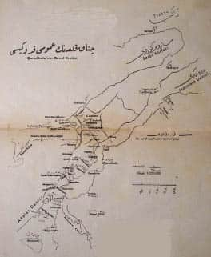

Piyade Alay Kumandanı Yarbay
Bursalı Mehmet Nihat
Önsöz
Derler ki şahıslar ile olaylar uzaklaştıkça, nesneler ise yakınlaştıkça büyür. Gerçekten de İskender’in ordusuna çok önemsiz görevle katılmış bir adam bu güne kadar yaşamış olsaydı bize insanüstü ve başka bir mahlûk gibi görünürdü. Annibal’in seferleri, Çaldıran ve Mohaç Savaşları geçen asırların derinliklerinden zamanımıza bakmakta olduğu içindir ki biz o olayları devlerin savaşları gibi algılamaktayız.
Fakat eski-yeni hiç bir savaş ve çatışma gösterilemez ki bizim dünya savaşındaki Çanakkale savunması kadar harikalarla dopdolu olsun. Subay veya asker o savaşta bulunmuş olanları biz bugün heyecansız ve umursamaz bakışlarla seyretmekteyiz. Ancak gelecek devirler, büyük olayın yanımızdan mütevazı birer gölge gibi geçmekte olan büyük kahramanlarını tarihin birer cesaret sembolü ve vatanseverliğin canlı örnekleri şeklinde hayranlıkla ve kutsayarak seyredecektir. İnsanlık, Çanakkale’nin son macerasını her büyüklük devresiyle görmek için biraz daha beklesin.
Bir taraftan araçları, askeri, cephanesi ve yiyeceği son derece bol bir saldırı ordusu donanmasıyla, topları, uçakları ve denizaltılarıyla ufuklardan, bulutların ötesinden ve denizlerin dibinden kesintisiz ateş ve ölüm yağdırıyor, diğer taraftan harcayacağı her mermiyi, yiyeceği her lokmayı kısmak ve hesap etmek zorunda olan yoksul bir savunma gücü. Yaralanan subay ve askerlerin yüzde seksenine ilk yardım yeri mezar oluyor. Bununla beraber o kadar oransız olan iki düşman ordunun aylarca süren çatışması sonucunda zayıf, güçlüye üstün geliyor. Bu olay hesap ile mantığın, cesaret ile iman önündeki ilk iflasıdır. İkincisi de Kurtuluş Savaşı’nda ilan edildi.
Bizi Dünya Savaşı’na bir avuç barut gibi atan Almanlar, Çanakkale Savaşı’nın şan ve şerefini -mezar soyguncularını bile utandıracak bir utanmazlıkla- kendilerine mal etmek istediler. O kıyamet esnasında ülkemize yayılan subaylarından en büyük ve tanınmış olan kimselerin imzasıyla yayınlanmış olan eserler bu gasp ve hırsızlığın çirkin birer delilidir.
Hayır, Çanakkale Zaferi’nin etkenleri arasına tek bir Alman girmedi. Mareşal Liman Paşa’ya ve etrafındaki arkadaşlarına kalmış olsaydı müttefik düşmanların ordu ve donanmaları Çanakkale’yi çok az fedakârlıklarla deler geçerdi. Biz tarihlerde ve gazetelerde okuduğumuz Alman ordusunun mükemmelliğinden -Goltz Paşa dışında- ülkemizde hiç bir iz ve o mükemmeliyeti taşıyan tek bir adam görmedik. Buradaki kumandanlarının en akıllısı kabul edilen General Liman Von Sanders, savaş sırasında en tereddütlüsü ve savaştan sonra da en yalancısı oldu. Görüyoruz ki aldığı tedbirler veya tedbirsizliği düşmana İstanbul’un kapısını açmak üzereyken Almanyalı generalin karşısına Türk Yarbayı Mustafa Kemal Bey çıkarak hatasını yüzüne vurduktan sonra ileride dikilecek gazilik heykelinin temelini Anafarta’da atıyor.
Anafarta ismi ilk defa o gün tarihe geçti. Anafarta bugün on iki senelik geçmişe sahip bir sonsuzluktur. Temeli sonsuzluk olan bu heykeli gelecek asırlar sırf Türk ırkının kalıcı bir yiğitlik sembolü olarak selamlayacak. Çanakkale Savaşları askerlik tarihinin, Anafarta ise Çanakkale Savaşlarının en yüksek zirvesidir. Bu zirvede savaşın en yüce devresi resmedilirken Türk olmayan ne bir kumandan bulundu, ne bir subay, hatta doğal olarak ne de bir nefer...
Mehmet Akif’in “Asım” adlı eşsiz şiir kitabındaki Çanakkale’ye ait iki üç sayfadan başka hiçbir şairimiz o konunun şanına yaraşır bir eser meydana getirmedi. Asım’daki sayfalar sırf şiirdir, tarih değil... Bu macerayı birer birer mırıldanacak güzel bir eser ortaya çıkıncaya kadar Çanakkale Zaferi’nin mısraları, bestelenmemiş bir savaş ve cesaret şiiri olarak kalacak.
O gazaya kılıcıyla katılmış olan Yarbay Bursalı Mehmet Nihat Bey şimdi de kalemiyle hizmetini devam ettiriyor. Kısa fakat pek özlü bir şekilde yazılmış olan bu kitap, Çanakkale’nin doğal konumuyla etrafındaki mevkileri ve orada geçen son olayı gösterir bir levhadır.
Mehmet Nihat Beyefendi, eseriyle tarihe hizmet etti. İlerde bir şair bu sayfalardan ilham alarak Çanakkale destanını meydana getirirse bunda tarihçi hazretlerinin de önemli bir şan ve şeref hissesi olacak.
Mehmet Nihat Bey bizzat katılmış olduğu olayı önce tarihe kavuşturdu. Şimdi de kalemi, tarih ile şiir arasında bağlantı hattı oluyor. Tebrik ederiz.
Süleyman Nazif
Çanakkale Seferi Hakkında Birkaç Söz
Şehremini
15 Ağustos 1926
Her sene Çanakkale Şehitliği’ni -ki bütün Gelibolu Yarımadası ve bu Boğaz’ın Anadolu yakasındaki arazinin önemli bir kısmı bizim için başlı başına tek bir şehitlik durumundadır- ziyareti önemli bir millî ve vatanî bir görev saymakla yüksek bir kadirşinaslık gösteren Şehitlikleri İmar Cemiyeti’nin bu davetini kabul ederek aynı şekilde bilimsel olarak bir millî ve vatanî görev yapan ve yapacak olan kimseler için Çanakkale Seferi’nin tamamını gösterir kısa bir kitapçık hazırlanması emrini alınca itiraf ederim ki çok zor bir durumda kaldım; “Başlı başına çok önemli bir tarihî devre olan bu savaşın akışını bir program ve bir fihrist hâlinde bile olsa böyle birkaç sayfaya nasıl sığdırabilirim?” diye.
Sonunda bana bu cüreti veren bir sebep de savaşın henüz yakın bir geçmişte gerçekleşmiş olması ve birçok canlı tanığının henüz hayatta bulunması oldu. Kusur ve noksanlarını bu bahtiyar tanıklar elbette tamamlarlar ve affederler.
Not: Metindeki tarihler genellikle Rûmîdir. Bazılarının yanına Milâdî karşılıkları yazılmıştır.
Piyade Alay Kumandanı
Yarbay Bursalı Mehmet Nihat
Çanakkale Nedir?
Çanakkale Boğazı’nı bir taraftan Karadeniz, İstanbul Boğazı, Marmara, Adalar Denizi ve diğer taraftan Avrupa ve Asya’dan oluşan büyük bir sistem içinde inceleyecek olursak büyük önemini daha iyi anlarız ve görürüz ki doğu Rusya’da, Avrupa ile Asya arasında olduğu varsayılan ve coğrafî ve tarihî hiçbir kıymeti bulunmayan sınır çizgisini bir yana bırakacak olursak Kafkas zincirinin batı ucundan Çanakkale Boğazı’nın Adalar Denizi ağzına kadar eski dünyanın bu iki önemli kıtası birbirinden Karadeniz ve Marmara Denizi’yle ayrılmıştır. Ancak İstanbul ve Çanakkale Boğazlarında bu iki kıta bir birine el atacak kadar yaklaşmıştır. Bu şekilde Boğazlar, “Yakın Doğu” denilen Batı Asya ile Avrupa arasında en kestirme bağlantı yönleri oldukları gibi özellikle Karadeniz çevresindeki devlet ve ülkelerin dünyanın diğer taraflarıyla kolayca bağlantı ve ulaşımına, yani bunların deniz yollarına da tamamen hâkimdir.
Eski ve yeni medeniyetler, İslamlık ve Hıristiyanlık, Asya ve Avrupa tarihlerinin en önemli dönüm noktaları hep bu Boğazlar bölgesinde el ele vermektedir.
Böylece Çanakkale terimiyle anlatmak istediğimiz Boğazlar bölgesi, hiç şüphesiz dünyanın en ezelî ve ebedî, en büyük öneme sahip bir bölgesidir. Bu önemi dün neyse bugün de odur, yarın da öyle olacaktır. Çanakkale’ye (yani Boğazlara) hâkim olacak bir hükümet doğu ile batıyı birbirinden ayırır. Karadeniz çevresindeki yönetimlerin hayat ve geleceğine hâkim olur. (Nasıl ki bizim Çanakkale’ye hâkim oluşumuz, Dünya Savaşı’nda Rusya Çarlığı’nı deviren, Romanya’yı perişan eden, Bulgaristan’ı Merkezî Devletlere katılmaya zorlayan, savaşın akla hayale gelmez şekilde uzayıp gitmesine ve dünyanın durumunun savaştan sonra sekiz senedir hâlâ bir türlü düzeltilemez bir kargaşa içinde yuvarlanmasına etkili olan başlıca unsuru meydana getirmiştir.)
Bu önemi tarihin hemen her devrinde görürüz. Darius’un orduları doğudan batıya, İskender’in orduları batıdan doğuya uzanarak bu Boğazlar üzerinden geçtiği gibi İslamiyet’in bu yönden Avrupa’ya aşmasına Boğazlar engel olmuş, Haçlı ordularının bütün kuvvetleri bu Boğazlardan geçerek İslamiyet’e saldırmış, Roma İmparatorluğu buralara sahip olduğu içindir ki Asya ve Avrupa’daki toprakları üzerinde hâkimiyetini sürdürmeyi başarabilmiş, Bizans İmparatorluğu ancak bu bölgesel önemi sayesindedir ki çok uzun süre yaşayabilmiş, Türklerin birkaç asır devam eden Avrupa’ya yayılmaları hep bu Boğazlar üzerinde yapılmış, Boğazlara hâkim olmak için başlayan Avrupa’nın karşı saldırıları ise hep bu tarafa yönelerek bizi Doğu Trakya’ya kadar sürmüştür.
Kısaca, hiç şüphe etmeyelim ki Boğazlar bölgesine sahip bir yönetim dünyanın talihi üzerinde daima kesin tesirler yapmaya aday etkili bir güçtür. Bu tarihî bir zorunluluktur.
Çanakkale Boğazı Bölgesinin Doğal Durumu
Bu kitapçığımda özellikle Çanakkale Savaşı’ndan söz edeceğimden Boğazlar bölgesinin, yalnız Çanakkale Boğazı çevresi hakkında birkaç söz söylenecektir.
Bu boğaz, Biga ve Gelibolu yarımadaları arasında kuzeydoğudan güneybatıya doğru 63 km. (34 mil) uzunluğundadır. Genişliği, en geniş yeri olan Karanlık Liman bölgesinde 7.800, Adalar Denizi girişinde 3.750, en dar yeri olan Kilitbahir hattında 1.400 metredir. Boğaz’ın şekli bir “sin” (س) harfine benzemektedir ve bu harfin matematikte meçhul ve bilinmeyenin sembolü olmasından dolayı bu benzerlik tam yerindedir.
Gelibolu Yarımadası, bu boğazı Ege Denizi’ne karşı meydana getiren adeta bir kapak durumundadır. Yarımada’nın batı yakası aşağı yukarı Boğaz kıyısına paralel olarak Saros Körfezi’ne kadar devam eder ve her iki sahil arasındaki kara mesafesi girişte sıfırdan başlayarak Kilitbahir-Kumtepe hattında 11 kilometre, Kilya-Kabatepe hattında 7 kilometre, en geniş yeri olan Akbaş-Ece Limanı hattında 18-20 kilometre, Yarımada’nın Avrupa’ya birleştiği Bolayır kıstağında ise 4.5 kilometreden ibarettir.
Böylelikle Yarımada, Boğaz’ın batısında askerlik açısından pek elverişsiz bir bölge oluşturmaktadır. Boğaz’a yeterli bir hinterland verememektedir. Yarımada’nın her noktası Adalar Denizi’nden ateş altına alınabilir. Buna karşılık yarımadanın doğal durumu “bir bardak suda fırtına” denecek derecede kırışıktır. Tabak gibi düz ovacıklardan, kumsallardan itibaren keçilerin bile tırmanamayacağı sarp zirvelere, çayırlardan balta girmemiş ormanlara kadar her çeşit yer yüzeyi ayrıntısı bulunmaktadır. Yarımada’yı oluşturan dağların -ki Trakya dağlarının uzantısıdır- doruk çizgisi genel olarak ya hemen batı sahiline veya buna yakın olarak güneye uzanır. Bu sebeple yarımadanın belli başlı suları hep Boğaz’a dökülür. Bu zincirin, denize gayet yakın olmakla beraber 400 metreyi aşan yükseklikte çeşitli zirveleri vardır.
Anadolu tarafındaki Biga Yarımadası’ysa tamamen aksi durumdadır. Daha Kumkale’den itibaren güney kıyısına uzanarak Boğaz sahiliyle 130-140 derecelik bir açı oluşturur ve Boğaz’a geniş bir hinterland verir. Bazen yarımada sahilinden Boğaz’a, Çanakkale’ye varmak askerlik açısından zor bir iştir. Adım başında bir doğal engelle karşılaşılır.
Çanakkale Savaşı Ne Sebeple Yapıldı?
Biz, Dünya Savaşı’na girince müttefiklerimize yardım için İtilaf Devletlerine saldırmak ve üzerimize kuvvet çekmek gibi askerî bir gereklilik karşısında kalmıştık. Saldırı yönü olarak karşımızda Kafkas yolu ve Sina üzerinden Mısır yolu vardı. Zamanı ve uygulanış şeklindeki doğruluğu-yanlışlığı bir yana Sarıkamış saldırısıyla Kanal Savaşı bu sebeple yapılmıştı. Sarıkamış gerçi bizim için askerî bir felaket oldu. Fakat Rus Ordusu’nun da iler tutar bir yeri kalmamıştı. Daha bu savaşa hazırlanırken batı cephelerinde de malzemesizlik yüzünden sıkışmaya başlamış olan Rusya, gerek Kafkas cephesinde dikkatimizi başka tarafa çekmek ve gerek Boğazların açılarak kendi müttefikleriyle hızlı ve güvenilir bir ulaşım kurulması ihtiyacıyla Fransa ve İngiltere’ye müracaat etmiş ve Boğazların tehdit ve ele geçirilmesini istemişti. Esasen Boğazları ele geçirmek Rusya’nın savaş hedeflerinin en önemlilerindendi ve Rus-İngiliz yakınlaşmasının dayandığı noktalardan birisi de buydu.
Fakat Suriye’de Kanal Savaşı’nın hazırlanmakta olması, İngiltere’nin ve Fransa’nın o anda bir de Boğazlara göndermek için yeterli kuvveti bulunmaması İngilizleri, Kanal Savaşı’nın sonuçlarını beklemeye sevketmişti. Böylelikle Kress Bey-Cemal Paşa kumandasındaki Birinci Kanal Savaşı başarılı olamayınca ve tekrarlanmasının uzun zaman alacağı görülünce, İngilizlerin Mısır’daki kuvvetlerinin önemli bir kısmı kullanılabilir hâle gelmişti. Bu esnada Sarıkamış saldırısı sonucunda Kafkas cephesinde de uzunca bir bekleme devresi başladığından Rusya da Boğazlar savaşı için kuvvet ayıracak hâle gelmiş ve Odesa çevresinde bu maksatla 7. Ordu’yu yığmaya başlamıştı.
Fransa da bir miktar asker ve gemi verecekti. Bu şekilde 1915 Şubat’ında İtilaf Devletleri Boğaz savaşına karar vermiş, bu maksatla yeterli gördükleri bir kuvvet ayırmış bulunuyorlardı.
İtilaf devletlerinden her biri şu sebeplerle Boğaz savaşını açmayı gerekli görmekteydiler:
Rusya: Savaş hedefi olan İstanbul’u almak, Müttefikleriyle hızlı ve güvenli bir ulaşım sağlamak, Kafkasya’yı tehditten kurtarmak.
İngiltere: İstanbul’a Ruslardan önce girmek ve daha sonra İstanbul’u vermemenin çarelerini düşünmek. Rusya’yı savaşa devam edebilecek kadar beslemeyi sağlamak. Türk ihtiyat kuvvetlerini Boğazlara çekerek Mısır’ı bir şekilde saldırıdan kurtarmak ve Türklerin Irak kuvvetlerini takviye etmelerine imkân bırakmamak.
Fransa: Siyasî yakınlaşmaların gerektirdiği hususlardan ayrılmamak mecburiyeti ve bunun yanı sıra Rusya’yı desteklemeye imkân bularak Almanları ezebilmek endişesi.
Her üçünün de şu diğer ortak gayeleri vardı: “Cihad-ı Ekber” propagandası yoğun olarak devam ediyor ve ortaya tehdit edici bir “İslam Birliği” akımı çıkıyordu. Bu devam ederse bütün sömürgeler tehlikeye düşebilirdi. İslamiyet’in merkezi sayılan İstanbul’u doğruca tehdit etmek ve düşürmek bu akımı yerinde boğabilirdi. Diğer yandan tarafsızlığını korumakta olan Romanya, Bulgaristan ve Yunan devletleri Boğazların düşürülmesiyle şüphesiz İtilaf Devletlerine katılırlar ve Merkezî Devletler bu taraftan da çember içine sokulmuş olurlardı.
Osmanlı Hükümeti ise Boğazlar bölgesinin er-geç kesin bir rol oynayacağını göz önünde bulundurmuş ve ilk andan itibaren mücadeleye hazırlanmaya başlamıştı. Böylece Çanakkale Savaşı dünya savaşının daha ilk aylarından itibaren bir zorunluluk hâlini almıştı.
İki Tarafın Savaş Hazırlıkları
1- Osmanlılar:
Balkan Savaşı’ndan sonra Boğaz istihkâmları bir dönüşüm devresi geçirmekteydi. Bir hayli işler yapılmaya başlanmış ve fakat henüz hiç birisi tamamlanmamıştı. Bu durumdayken Saraybosna cinayeti olmuş ve bunun bir dünya savaşına varacağı tahmin edilerek Boğaz’a 29 Haziran 1914’te “Kısmî Seferberlik” emri verilmiş ve 31 Temmuz 1914’te genel seferberlik yapılmıştı. Üç ay kadar devam eden seferberlik devrinde ve daha sonra deniz savaşları başlayıncaya kadar aynı zamanda Boğaz tahkimatı ve silahları imkân dâhilinde yavaş yavaş takviye edilmişti. Öyle ki başlangıçta merkez istihkâmlarında bir deniz savaşında kullanılmaya elverişli 15/35,5 cm. çapında yalnız 24 top varken 19 Şubat’ta bu miktar 15’lik obüs ve toplar ilavesiyle 64’e ulaştırılmıştı.
Girişteyse belli başlı işe yarar yalnız 4 top vardı -24’lük-. Ve yine öyle kalmıştı. (Özel görevlerin yerine getirilmesiyle görevli küçük çaplı silahlarla, eski yapım ve etkisiz büyük toplar bu rakamların dışındadır). 4 Ağustos’ta Boğaz’ın mayın hattıyla kapatılması ve yalnız ticaret gemileri için bir koridor bırakılması emredilmiş, o anda elde bulunan yalnız 26 mayın ile 7 Eylül’de bir hat yapılmıştı. Daha sonra Almanya’dan mayınlar geldikçe bunlar dokuz hatta ulaştırılmıştı.
Boğaz istihkâmlarının bir çıkarma hareketine karşı orduyla korunma şekli şu şekilde bir gelişme göstermişti:
a- 1828-29, 1854-55, 1877-78 Osmanlı-Rus savaşlarında ve 1897 Osmanlı-Yunan ve 1912 Balkan Savaşlarındaki savunma planı: Bolayır kıstağını kuzeye karşı kapamak, Gelibolu ve Biga yarımadalarının Adalar Denizi kıyılarında gözetleme ve savunma birlikleri bulundurmaktı.
b- 1911-12 Osmanlı-İtalyan Savaşı esnasında Çanakkale savunmasına ayrılmış olan ordu; kuvvetin üçte birini Biga Yarımadası’nda şebekeler yönüne karşı hareketli bir savunmaya ayırmış, geri kalan bütün kuvvetleriyle de Kilitbahir etrafında geniş bir yay halinde bir savunma hattı oluşturarak burasını sonuna kadar savunmaya karar vermişti.
c- Dünya Savaşı’nın başlarında Çanakkale’de dört alaya çıkarılan yalnız 9. Tümenimiz vardı. Bu tümenin bir alayı Anadolu tarafına üç alayı da yarımadaya ayrılmıştı.
Savaşa girişimizden sonra 30 Kasım (1914)-18 Mart (1915) tarihleri arasında bu kuvvet derece derece takviye edilerek deniz savaşları sırasında en son şu durum ortaya çıkmıştı:
Bolayır kıstağının kuzeyinde 5. Tümen: 9 tabur, 7 süvari bölüğü, 6 batarya. (1. Ordu emrinde)
1. Ordu emrindeki 3. Kolordu: 7., 9. ve 19.[1] Tümenler: 25 tabur, 7 süvari bölüğü, 13 batarya. (Yarımada'da)
Seyyar jandarma birlikleri: 13 tabur, 4 batarya. (Anadolu tarafında)
Genel Karargâh emrinde 6. Tümen: 9 Tabur, 6 batarya. (Ezine'de)
Toplam: 56 tabur, 15 süvari bölüğü, 29 batarya.
İleri görüşlü bir kumanda makamı bulunmadığından bu kuvvetin belirli bir savunma stratejisi yoktu. Yalnız derli toplu bir bütün olan 3. Kolordu, düşmanın çıkarmasını en fazla Kabatepe ile Seddülbahir arasında bekliyor ve buna karşı sahilde savunma yaparak düşmanı karaya çıkarmamayı tertibatının temeli kabul ediyordu. Bu 56 tabur bu şekilde Trakya'dan Ezine'ye kadar kuş bakışı 140 km.'lik bir hat üzerine dağılmış bulunuyordu ve merkezde, kesin sonuç bölgesinde toplanması için en az 3-4 güne ihtiyaç vardı.
2- İtilaf Devletleri:
İlk planları şuydu:
Fransa bir tümen, İngiltere ise üç tümen verecek, bunlar Boğaz’ın önündeki adalara toplanacak. Bu esnada kuvvetli Müttefik filosu Boğaz’a saldırarak açacak, bunun üzerine bu tümenler karaya çıkarak Boğaz kıyılarındaki hattı işgal edecek. Filo ise İstanbul’a gidecek ve bunun İstanbul önünde görünmesiyle Osmanlı Hükümeti düşecek, Rusya ise bu sırada Odesa çevresindeki 7. Ordusunun (175.000 insan) büyük kısmıyla karadan ve bir kısım kuvvetiyle Burgaz ve Varna’dan karaya çıkarak Romanya ve Bulgaristan üzerinden ve belki bunlarla birlikte Trakya’ya yürüyecek ve Osmanlı Hükümeti’nin işini bitirecekti.
Hazırlıklar buna göre yapılmış ve bir hayli gecikmeden sonra Çanakkale deniz saldırısının nihayet 18 Mart 1915’te yapılması kararlaştırılmıştı. 7. Rus Ordusu ise bu esnada batı Rus cephelerindeki sıkışıklık üzerine parça parça o tarafa gönderilmiş olduğundan Rusya’nın yapmayı düşündüğü yardıma, mantık sınırları içinde imkân kalmamıştı.
Böylece İtilaf Devletleri, koca Türk Ordusunu üç tümen, yani 48 tabur, şöyle böyle 60.000 savaşçı askerle ve filosuyla ortadan kaldırmayı mümkün görmüş oluyorlardı. Bu bizim lehimize yapılmış pek büyük bir düşman yanlışıydı! Gerçi bu kuvvetin filo ile ortak hareket ederek Mart’ın ilk haftasında bizim dağınık 56 taburumuza kesin bir darbe indirmesi de teorik olarak imkânsız değildi. Fakat bunu da becerememişler ve aşağıda görüleceği üzere filonun kesin yenilgisi üzerine şaşırmış kalmışlardı.
18 Mart Mart Deniz Savaşları ve Öncesi
Biz, seferberlik ilan ederek Boğaz’ı yukarıda görüldüğü gibi 4 Ağustos’ta kısmen kapattıktan birkaç gün sonra 10 Ağustos’ta Goeben ve Breslau’ın Yavuz ve Midilli adlarını alarak Boğaz’a sığınmalarının ertesi günü İngiliz Filosu Boğaz’a gelerek geçmek istemiş, geri çevrilmesi üzerine Boğaz’ı gözetlemeye başlamıştı.
26 Eylül’e kadar biz de serbestçe torpidolarla girip çıkmaya devam ettiysek de bugün düşman bizi engellemiş, bunun üzerine Boğaz tamamen kapanmıştı.
Sonunda 29 Ekim 1914’te Karadeniz hadisesinin ortaya çıkışı ve savaş durumunun kesinleşmesi üzerine 3 Kasım 1914’te Çanakkale ilk bombardımanla karşı karşıya kalmıştı. Şöyle ki:
İkisi İngiliz, ikisi Fransız olmak üzere dört savaş gemisinin de içinde bulunduğu yirmi sekiz parça gemiden oluşan düşman filosu saat 15.00’ten itibaren on yedi dakika boyunca girişi bombalamış, bize beş subayla seksen nefer kayba sebep olduktan sonra ateşi kesmişlerdi. Bu olay âdeta ilk savaş selamı yerine geçmişti.
Bundan sonra Adalar Denizi kıyılarında düşman gemilerinin faaliyeti artarak şurada burada tek tük karşılıklı ateşler olmuş ve 26 Kasım’da bir düşman denizaltısı Boğaz’a girerek denizde demirli olan Mesudiye’yi batırmıştı.
Deniz saldırısının planı şöyleydi:
a- Giriş tahrip edilecek. (1. aşama)
b- İlk mayın hattına kadar deniz temizlenecek. (2. aşama)
c- Kesin saldırı: Bunun için de önce Kepez hizasına kadar iki taraftaki tabyalar tahrip edilecek, sonra savaş sırasında mayın hatlarından geçit açılacak, filo bu geçide dalarak İstanbul’a doğru hareket edecek. (3. aşama)
d- Daha sonra ordu karaya çıkarak geride kalan istihkâmları arkadan ele geçirecek ve Boğaz’a hâkim olacak. (4. aşama)
Bu planın sakatlığını ve gülünçlüğünü burada açıklamaya lüzum yoktur!
Planın uygulaması şöyleydi:
a- Girişin tahribi: 19 Şubat’ta 11 zırhlı, 3 kruvazör, 28 parça diğer gemilerden oluşan bir filo 14/35.5 cm. çapında toplam iki yüz topla bizim girişe -dört adet 24’lük topumuza- saldırdı. Savaş saat 09.30’dan 19.30’a kadar -iki saatlik ara vermenin dışında- tam on saat devam ettiği halde iki subay ve iki nefer şehit, on bir nefer yaralıyla ve oldukça az bir maddi kayıpla kurtulduk. Dev ile karınca mücadelesi karıncanın zaferiyle sonuçlandı.
Bundan sonra birkaç gün havalar bozuldu. Düşman 25 Şubat’ta saldırısını yeniledi. 7,5 saat aralıksız ateş, düşman yerleşimindeki değişiklik sonucunda bu kez etkili oldu. 13 şehit ve 19 yaralı verdik. Fakat bütün giriş topları susturulmuş ve tahrip edilmişti. Böylece düşman planının ilk aşaması kendi hesabına başarıyla son bulmuş, giriş açılmıştı.
b- Savaş alanının temizlenmesi: 26 Şubat’tan 17-18 Mart gecesine kadar aralıksız devam etti. Hemen her gün çeşitli düşman gemileri Boğaz’dan içeri girerek merkez tabyalarına ateş açıyordu. Geceleri sabahlara kadar mayın aranmıştı ve iki taraftan birisi temizlik, diğeri denizi yeniden mayınlamak ve siperleri sağlamlaştırmak için elinden geleni yapmıştı. Bu esnada düşman çıkarma ordusu da nakliye gemileri içinde İmroz ve Limni’de toplanmıştı. Bu faaliyette hangi tarafın başarılı olduğunu 18 Mart savaşı gösterecekti.
c- Kat‘i savaş: 18 Mart’ta saldırıya karar verilmişti. Düşman, içinde Queen Elizabeth gibi en son model gemilerin de bulunduğu 18 zırhlıdaki 14/38 cm. çapında 316 topuyla bizim kıymet ve kudretçe her halde oldukça aşağı özelliklere sahip 15/35,5 çapındaki sadece 73 topumuza saldıracaktı.
Amiral Carden eski sayılabilecek sekiz gemiyi kaybetmeyi göze almış ve geri kalan on zırhlıyla İstanbul önüne varmaya karar vermişti!
Fakat sabah saat 10.30’da başlayarak geceye kadar devam eden benzersiz savaş, düşman için hiç beklenmedik bir sonuç ortaya çıkarmıştı.
Bizin toplam 3 subay, 22 nefer şehit ve 2 subay, 59 nefer yaralımızla, saf dışı kalmış bir tek topumuza karşılık; düşmanın 3 zırhlısı, 44 topu ve bütün mürettebatıyla batmış, 5 zırhlı esaslı derecede ağır maddi zarar ve insan kaybıyla saf dışı kalmış, diğer gemilerinin tamamı da az çok zarar görmüş, bir hayli torpido vs. batırılmış veya yaralanmıştı.
Savaş o kadar acı olmuştu ki amiraller, generaller akşamüzeri bir araya gelince “eyvah” demişler, bütün cesaret ve azimlerini kaybetmişlerdi. Ertesi gün girişimlerini yenilemeyi hatırlarına bile getirememişlerdi. Böylece millî ve doğuştan gelen Türk azim ve kararlılığı, Avrupa’nın maddî ve teknik planını bir hamlede alt üst etmiş, zafer kazanılmıştı.
Çanakkale Kara Savaşlarına Hazırlık Devri
Düşman için yapacak iki şey vardı. Ya bu işten vazgeçmek -ki bu savaştan beklenen bütün maddî ve manevî yararların kaybına ek olarak şöhret ve şerefçe de pek ayıp bir şey olurdu- veyahut daha önemli kuvvetlerle ve başka bir planla girişimi yenilemek -ki düşman buna karar verdi- ve buna hazırlık olarak Boğaz’ın önündeki kuvvetini Mısır’a ve uzak adalara götürdü. Yeni kuvvetler aramaya ve yığmaya başladı.
Biz ise Çanakkale’ye bir kara saldırısının gerçekleşmesini artık yakın gördük ve Boğaz’ın karadan savunmasını şöylece yeni baştan düzenledik:
a- 25 Mart’ta Mareşal Liman von Sanders kumandasında 5. Ordu kuruldu.
b- Ordu; 7, 9 ve 19. Tümenlerden oluşan 3. Kolordu; 4 ve 5. Tümenlerden oluşan 2. Kolordu; 3 ve 11. Tümenlerden oluşan ve daha sonra 15. Kolordu unvanını alan Weber Paşa Kolordusu’ndan ve bir süvari alayından meydana gelmekteydi.
c- 24 Nisan 1915’te (çıkarmadan bir gün önce) kuvvet ve askerin konumu şöyleydi:
- Bolayır kıstağının kuzeyinde 9 tabur, 9 süvari bölüğü, 7 batarya
- Bolayır’dan Seddülbahir’e kadar olan alanda 29 tabur, 4 süvari bölüğü, 16 batarya. (Bunun Gazi Paşa kumandasındaki 19. Tümeni Bigalı-Eceabat civarında ihtiyattı.)
- Anadolu tarafında 27 tabur, 2 süvari bölüğü, 12 batarya.
Yani toplam 65 tabur, 15 süvari bölüğü, 35 sahra ve 6-7 değişik cins ağır bataryadan oluşan tam tamına 75.000 savaşçısı olan bir ordu yaklaşık 150 km.’lik bir hat üzerinde ve aralarında Boğaz gibi bir engel olmak üzere iki kısma ayrılmış.
d- Liman Paşa, düşmanın çıkarmasını ne hikmetse en çok Anadolu tarafındaki Beşigeler’den bekleyerek buraya çok fazla güvendiği Weber Paşa Kolordusu’nu vermişti ve savunma stratejisi düşmanın kıyıya çıkmasına izin vermek, daha sonra gece saldırılarıyla denize dökmekti. Bu maksatla kıyı boyunda sadece hafif gözetleme ve örtme birlikleri vardı. Büyük kısmı ikinci ve üçüncü hatlarda olmak üzere geride toplu halde bulunuyordu.
e- İstihbaratımız kötü işlediğinden, düşmanın hareketlerini ancak vakit geçtikten sonra öğreniyorduk. Nitekim yukarıda açıklandığı gibi düşmanın Mısır’a gittikten sonra yine gelmekte olduğunu işitmiştik. Aşağıda açıklanacağı gibi düşman, çıkarma yapmak için tekrar Boğaz’ın önüne geldiği gün ise Mısır’a gittiğini haber almıştık. Yani 24 Nisan akşamı, gerçekleşmesi yakın bir saldırıyı hiç de beklemiyorduk.
Düşmanın bu defaki planı da şöyleydi:
İngilizler, General Hamilton kumandasında 4 piyade ve 1 süvari tümeni, Fransızlar da kuvvetli bir tümen ayırmışlardı ki tamamının kuvveti 80.500 insan ve 178 toptu. Bundan başka Hint tümeni de arkadan geliyordu. Her durumda ilk çıkarma için 70.000 insan el altındaydı.
Ruslar da bu sırada 47.000 insan ve 120 topla bir sefer kuvvetini deniz yoluyla İstanbul Boğazı’na sevk etmeye karar vermişlerse de savaş hâli gereği bu kuvveti toplamayı başaramamışlardı.
Etraflı keşifler sonucu asıl kuvvetlerin Seddülbahir bölgesine çıkartılması ve buradan merkez istihkâmlarının ele geçirilmesi, bu hareketin; Kabatepe’ye bir İngiliz Kolordusu çıkartarak kuvvetli bir şekilde ve Kumkale’ye de bir Fransız birliği çıkartarak daha zayıf bir şekilde gizlenmesi ve korunması kararlaştırılmıştı.
Filo bu kez sadece çıkarma çalışmalarını ve karaya çıkacak birliklerin harekâtını korumayı üstlenecek, ancak istihkâmların kara harekâtıyla düşürülmesinden sonra filo Boğaz’a sokulacaktı.
Hazırlıklar 24 Nisan’da yani 18 Mart Savaşı’ndan otuz yedi gün sonra tamamlanmış bulunuyordu. Bu anda askerî durum düşman lehindeydi. İki taraf genel kuvvetlerinin aşağı yukarı eşit olmasına rağmen düşman kesin sonuç bölgesinde bizden 3-4 gün önce büyük bir kuvvet ile bir darbe vurabilirdi. Fakat bu kez de düşmanın beklemediği Türk azim ve cesareti bütün hesapları alt üst edecek, maneviyat maddiyatı mağlup edecekti.
Çıkarma ve Kara Savaşları
Çıkarmadan 3-5 gün önce Boğaz’da denizaltı faaliyeti hızlandırılmış, birkaçı batırılmasına rağmen pek çok denizaltı Marmara’ya geçmişti. Düşman bununla doğal olarak bizim Boğazlar bölgesini denizden desteklememizi engellemeyi hedeflemişti. Fakat bu olaylar bile dikkatimizi yakın geleceğe gerektiği kadar çekmemişti.
Bunun üzerine 25 Nisan 1915 sabahı rahat uykudayken birdenbire başlayan top sesleriyle fırladık. İşin o zamanki ortaya çıkış şeklini bir yana bırakarak olayların gerçek akışını şöyle özetleyebiliriz:
Kumkale Muharebesi
25 Nisan sabahı 4 tabur piyade, biraz topçu vesaireden oluşan bir Fransız müfrezesi, bir bölükten ibaret hafif sahil gözetleme müfrezemiz karşısında -ki bu müfreze de Alman tümen kumandanından düşmanla karşı karşıya gelmemek ve çıkarmaya izin vermek emrini almıştı- karaya nispeten kolayca çıktı. Menderes ile deniz arasında Orhaniye’ye doğru ilerlemeye çalıştı. Fakat durduruldu.
Buna karşılık bu taraftaki 3. Tümen Alman kumandanı ve bunun bağlı olduğu 15. Kolordu’nun Alman kolordu kumandanı ve kurmay başkanı çok uzun süre kesin bir karar alamadılar ve derhal uygulamaya girişemediler. Böylece düşman bütün gün boyunca hemen hemen serbest kaldı.
Nihayet 25-26 Nisan gecesi bizim 3 tabur ve 2 dağ bataryamız düşmanın 4 tabur ve 3 bataryasına hazırlıksız ve düzensiz bir gece saldırısı yaptıysa da özellikle sahile yanaşarak ateş açan bütün düşman savaş gemilerinden etkilenerek başarılı olamadı.
26 Nisan sabahı bir taburla daha takviye edilerek ikinci bir saldırı yaptık. Gündüz olmasına rağmen bu kez ilerleyerek Kumkale köyüne kadar girdik. Düşman daracık bir alana sıkıştı. Hatta bir aralık teslim olmayı düşündü. Elçi gönderdi. Fakat donanmanın, gerek kendi askeri ve gerek birliklerimiz üzerine açtığı şiddetli ateş düşmanı da bizi de durdurdu. Bir süre sonra askerimiz biraz geriye çekilmek zorunda kaldı.
Fakat 26 Nisan günü akşam olunca Fransız müfrezesi görevinin sona erdiği düşüncesiyle buradan kaçmayı canına minnet bildi ve yorgun askerimizin durumundan faydalanarak nispeten az bir kayıpla ve gecenin karanlığından yararlanarak sessizce bölgeyi boşalttı.
Böylece Kumkale Muharebesi yaklaşık 40-45 saat devam ederek sona ermiş oldu. Bununla birlikte bu kısa çarpışma iki tarafa da çok pahalıya mal olmuştu. Bizim 4 taburda 1.700’den fazla kaybımız vardı. 5.000 kişilik düşman müfrezesi de yarı yarıya mahvolmuştu. İki taraf birbirine birkaç yüz de esir vermişti ki bu yalnız buraya özgü bir iş oldu. Diğer taraflarda ne biz esir alabildik, ne de düşman!
Bu gidişat gösterdi ki eğer 3. Tümen Kumandanı Albay Nicolai gayretli ve muktedir bir asker olsaydı bu karşı saldırı oldukça zayıf bir kuvvetle ve iyi bir taktikle hazırlanıp uygulanabilir, büyük ihtimalle düşmanı tamamen mahvetmek ve esir almak mümkün olurdu. Böylece düşmanın karaya çıkmasına izin vermiş olmak gibi hatalı olduğu daha sonra kesinleşen bir savunma planından avantajlı bir durum elde edilebilirdi.
Bununla birlikte her ne olursa olsun Kumkale Muharebesi’nin bu şekilde hızla bitmesi bütün 15. Kolordu’nun aşağıda belirtileceği gibi geç, güç her neyse karşı tarafa nakledilmesi için serbest kalmasını sağlamış ve böylelikle kesin sonucu etkileyen önemli bir unsur olmuştu. Düşman burasına erkence boşaltmakla her halde olayların akışı ve gelecek açısından çok zararlı çıkmıştı.
Arıburnu Muharebesi (19 Mayıs’a kadar)
Yine aynı sabah saat 04.00’te plana göre Kabatepe’ye çıkarma yapmaya karar vermiş olan düşman her nasılsa yanılarak Arıburnu’na çıkarma yapmaya başlamıştı. Buraya ayrılan kuvveti, iki (Avustralya-Yeni Zelanda) tümeninden oluşan ve bu kelimelerin ilk harflerinden meydana gelen ANZAC sembolüyle ifade edilen İngiliz kolordusuydu. Başlangıçta bir tümen çıkarılacaktı. Çıkarma bölgesinde ancak bir piyade bölüğümüz vardı. Bu bölüğün mensup olduğu 27. Alay’ın iki taburu geniş bir alana dağılmış bir halde sahili gözetliyordu. En yakın takviye kuvvetleri Sarafim Çiftliği’ndeki bir alay (kuş uçuşu 9 km.), Eceabat’taki bir tabur ve Bigalı civarındaki 19. Tümen -Yarbay Mustafa Kemal Bey- (10 km.) idi.
Bölüğümüz ve buna yardım eden diğer zayıf birlikler sahilde iyi dayanmışlar ve 4.000 kişilik bir alaydan oluşan ilk çıkarma kafilesine önemli kayıplar verdirmişlerdi. Bununla birlikte düşman karaya çıkmayı başarmıştı. Arkasından kısa zamanda diğer alayların da çıkmasıyla tamamlanan İngiliz tümeni hemen üç koldan yelpaze gibi açılarak doğuya ilerlemeye başlamıştı. Düşman bir hamlede bu sarp arazide sahilden kuş uçuşu 2,5 km. doğuya kadar sokulmuş, Conkbayırı’na çıkmaya başlamıştı. Durum kritik hale gelmek üzereydi.
Fakat Gazi Paşa yetişti, Çanakkale’yi kurtardı.
Gerçekte düşmanı Anadolu’dan bekleyen Liman Paşa, ordu ihtiyatı olan 19. Tümen’i de bir hayli zaman Anadolu’ya geçirmek istemiş, hatta bu tümenin bir alayı, bir süre Çanakkale’ye geçirilmiş fakat Gazi Paşa’nın da isteği ve etkisiyle çıkarma günü 19. Tümen’in yukarıda belirtildiği gibi Bigalı civarında bulundurulması başarılmıştı.

Çanakkale savaş alanının krokisi.
Çıkarma haberi ve gürültüleriyle silah başı eden tümen bir süre durumun netleşmesini beklemiş fakat üstten bir emir gelmemesi üzerine Mustafa Kemal Bey kendiliğinden karar vererek bir alay ve bir bataryasını yanına alarak Kocaçimen’e doğru yönelmişti. Bu sırada 27. Alay toplanarak düşmanın sağ kanadına saldırıya başlamıştı.
Gazi Paşa da Conkbayırı’na gelince düşmanı gördü ve kuvvetini derhal saldırıya sevk etti.
Mevcudu noksan olan beş taburumuz toplam 2.500 savaşçısıyla düşmanın 12.000 askerine saldırmış ve bir darbede son ilerlediği noktanın kuş bakışı 1,5 km. batısında ve sahilin ancak 500-700 metre doğusundaki bir hatta kadar geriye sürmüştü.
Bu şekilde düşmanın, Yarımada’yı boşalttığı güne kadarki süre içinde ilk ve son kez olarak kazandığı nispeten geniş sayılabilecek arazi saati saatine elinden alınmış ve düşman son güne kadar tutunmak zorunda kaldığı hatta püskürtülmüştü. Bununla Arıburnu Cephesi’nin temeli atılmıştı.
İlk savaş iki taraf için pek kanlı olmuş ve oranlanamayacak kayıplar ortaya çıkmıştı. Bununla birlikte Türk azmi ve fedakârlığı, kendisinden altı kat üstün düşmanı çaresizliğe mecbur etmişti. Bu kuvvetten düşmanı denize dökmek de beklenemezdi. Elde edilen sonuç zaten insanüstüydü.
Düşman daha bu darbeyle hareket özgürlüğünü kaybetmişti. Biz ise; 27 Nisan’da 24 düşman taburuna karşı yalnız altısı zinde 14 taburla, 1 Mayıs’ta daha büyük ölçekte bir saldırı yapmıştık.
Gerçi düşman daima üstün olmakla birlikte 25 Nisan gününe göre bu saldırılar daha elverişli şartlar altında yapılmışsa da düşmanı denize dökmek mümkün olmamıştı, olamazdı da... Çünkü ilk günkü çarpışma, askerî ifadeyle bir hareket harbi hâlinde ve bir tesadüf çatışması şeklinde olmuş cesaret ve manevî güç çok geniş bir yer tutmuştu. Fakat 26 Nisan’dan itibaren düşman, toprağa kuvvetli şekilde yerleşmiş ve ancak yüklü miktarda malzeme ve geniş hazırlıklar sonucu çökertilebilecek bir siper içine girmişti.
Bizim ise o zaman böyle bir siperi çökertmek için ne yeterli malzeme ve aracımız vardı, ne de daha sonra “Siper Savaşları” adını almış olan bu savaş tekniğinin inceliklerinden bütün dünya ile aynı anda haberdar bulunuyorduk.
Diğer taraftan düşman kuvvetli bir donanmanın top, hatta tüfek koruması altında bulunuyordu. Bununla birlikte biz de çok pahalıya mal olmakla beraber düşmanın gayretini ve girişimlerini tamamen kırmak, kendimizden üstün düşman kuvvetini yerinde çakılı bırakmak ve Güney Grubu’nda sürmekte olan kesin savaşın yan ve gerisini tam bir güvenlik içinde bulundurmayı başarmak gibi lehimize önemli askerî üstünlükler elde etmiştik.
Bundan sonra 19 Mayıs’a kadar mevzi savaşı devam etmiş olup o gün sabaha karşı Kuzey Grubu adını almış olan Arıburnu Cephesi’nde taze iki tümenin de katılımıyla düşmanı denize dökmek maksadıyla genel bir gece saldırısı daha yapılmışsa da bu saldırı yalnız iki tümene yarım saat içinde 5.000’den fazla kayba mal olarak başarısızlığa uğramıştı. Çünkü siper savaşının inceliği hâlâ kavranmamış, bu saldırı da hazırlıksız ve düzensiz yapılmıştı. Bundan sonra tâ Anafartalar savaşlarına kadar artık önemli bir olay olmamıştı.
Seddülbahir (Güney Grubu) Muharebesi
Daha şimdiden söyleyeyim ki burada süren kesin savaş 25 Nisan’dan 13 Temmuz’a kadar tam 80 gün ve hemen hemen aralıksız geceli gündüzlü devam etmiş ve sonunda düşmanın tam yenilgisiyle sonuçlanmıştı.
25 Nisan sabahı düşman şöyle çıkmıştı:
Morto’ya: 1 Tabur
Ertuğrul Koyu’na: 4 Tabur
Tekke Burnu tarafına: 5 Tabur
Sığındere: 2 Tabur (Bu müfreze her nedense buraya çıkacağına Kirte’nin batı hizasına çıkmış ve tek başına kalarak aşağıda açıklanacağı üzere imha edilip kovulmuşlardır.)
Her çıkarma tümenini bir kuvvetli filo koruyordu. Buna karşılık Türk kuvvetleri bu alanda geniş bir kordon halinde dağınık iki piyade, zayıf mevcutlu bir seyyar jandarma taburuyla bir sahra ve bir iki bataryadan ibaretti.
Mücadele çok çetin olmuş ve bu 12 düşman taburu başlıca iki Türk taburu karşısında çeşitli çıkarma bölgelerinde defalarca başarılı olamayıp püskürtülerek akşamüstü güç hâl ile sahil boyunu tutabilmişlerdi. Düşmanın böylece devamlı kuvvetlenmesine, arazinin düşmanın gemi ve kara ateşleri etkisine pek elverişli bulunmasına rağmen akşama kadar hiçbir takviye kuvveti alamamış olan iki Türk taburunun mensup olduğu 26. Alay’ın Kumandanı Yarbay merhum Kadri Bey, birliklerinin büyük kayıplara uğramasına rağmen işte bu harikayı göstermeyi başarmış ve kesin darbeyi indirmek isteyen düşmana bütün günü kaybettirmişti.
Kirte’nin batısında tek başına kalmış 26. Alay’ın bir-iki takım piyadesi karşısında bir türlü ilerlemeyi başaramamış olan iki düşman taburu da 25/26 Nisan gecesi geriden yetişen 25. Alay’ın 3. Taburu tarafından bir gece saldırısıyla kumandanı da içlerinde olmak üzere âdeta imha edilmiş, geride kalanlar ise 26 Nisan sabahı tekrar kayıklarına binerek zor kaçmışlardı.
Diğer düşman grupları da pek çok kayba uğramıştı. Mesela yalnız Ertuğrul Koyu’na çıkan 4.000 kişiden akşamüstü ancak 500 kişi hayatta kalmıştı. Seddülbahir ise 25/26 Nisan’a kadar bizim elimizde bulunuyordu.
26 Nisan’da mücadele devam etti. Bugün akşama kadar düşman Fransız tümeniyle beraber bu alana 40 tabur çıkarmış, buna karşılık biz ise ikisi hemen hemen harap olmuş halde yalnız 9 tabur toplayabilmiştik ve ileride açık bir vaziyette kalamayarak akşama doğru düzenli bir hâlde bir yay oluşturacak şekilde ikinci hatta çekilmiştik. İşte bu hat, düşman aşağı yukarı sekiz ay sonra geri çekilirken de bulunduğumuz hattı.
27 Nisan’da düşman genel saldırıya geçmiş ve fakat ayın 28’inde de devam ettiği bu şiddetli saldırı sonucunda en az 4-5 kat üstün olmasına rağmen hatlarımız üzerinde kırılarak başarısızlığı kabul etmek zorunda kalmıştı. Düşmanın bu başarısızlığıyla Güney Grubu’nun ilk buhranlı aşaması kapanmış oluyordu.
29, 30 Nisan ve 1 Mayıs günleri iki taraf için bir yandan kanlı çarpışmalar diğer taraftan hazırlıklarla geçmişti. Düşman kuvvetli şekilde tahkimat yapmış ve yerleşmişti.
Bizim tarafta Sodenstern adında bir Alman binbaşısı (bizde yarbay rütbesiyle 5. Tümen kumandanıydı) Güney Grubu’nun kumandasını üstlenmiş ve büyük kısmı kayıplar vermiş birlikler olmak üzere toplam 12-13 bin savaşçıya ulaşan 19 tabur ve 14 bataryasıyla düşmanın en az 48 taburuna bir gece saldırısı yapma kararını vermişti.
Bu saldırı 1 Mayıs 1915 saat 22.00’de başlayarak bütün gece devam etmiş ve birkaç yerde denize kadar gidilmişti. Mesela Seddülbahir’deki Fransız karargâhının emirberleri bile karargâh içinde çarpışmaya girmek zorunda kalmışlardı. Düşman fena halde sıkışmış fakat denize dökülememişti.
3 Mayıs’ta gelen taze 15. Tümen’in de katılımıyla aynı gün saat 21.00’den itibaren 23 tabur ve 14 batarya ile bir gece savaşı daha yapılmıştı ve bu da aynı şekilde gerçekleşerek son bulmuştu. Şimdi anlıyoruz ki; gerek keşif gerekse silahla epeyce hazırlanmış ve daha iyi düzenlenip sevk ve idare edilseymiş bu saldırılar büyük ihtimalle kendisinden üç-dört kat üstün düşmanı imha etmeyi başaracakmış. Fakat ne çare ki öyle olamamış ve bunun yanı sıra dökülen kanlar yine boşa gitmemişti. Çünkü bu saldırılar bundan sonra sekiz ay devam eden Çanakkale Muharebesi’nin ilk direniş taşını oluşturmuş, Balkan Savaşı’nda kırılan maneviyatımızı, kendimize olan güveni yükseltmiş ve Türk askeri karşısında Avrupalının bire beş bile olsa aciz kalacağını belli etmişti. Diğer taraftan bu saldırılar düşmanı ummadığı durumlar karşısında bırakmış, şaşırtmış ve bu şaşkınlık tâ sonuna kadar düşmanın icraat ve önlemlerinde daima kendisini göstermişti.
İki tarafın kayıplarıysa büyüktü. 25 Nisan ile 3 Mayıs arasındaki toplam dokuz günde yalnız Seddülbahir’de İngilizler 602 subay ve 13.336 er kaybetmiş, Fransız tümeninin 22.000 mevcudundan da 12.610’u saf dışı kalmıştı.
Muharebe edilen alanın genişliği sadece 4 km. ve derinliği ise bu hattın Seddülbahir’den en uzak olan noktaya mesafesi yalnızca 6-6,5 km.’den ibaretti.
4 Mayıs’ta Güney Grubu’nun kumandasını 15. Kolordu’nun kumandanı olan Weber Paşa üstlenmiş ve artık savunma yapmaya ve siperleri tahkime karar verilmişti. Bununla Güney Grubu savaşlarının; düşmanın sürekli saldırısı ve bizim savunmamız şeklinde tâ 13 Temmuz’a kadar devam eden ikinci devri başlamıştı. Bu devre esnasında düşman, daha Mayıs sonlarında 10 tümene yani daima mevcudunu koruyan yüz yirmi tabura ulaşmış, biz ise en kuvvetli zamanımızda büyük kısmı yarı mevcutlu azami kırk-kırk beş tabur bulundurabilmiştik. Hele top, cephane, silah ve lojistik destek itibarıyla aramızda karşılaştırma yapmaya değecek bir benzerlik bile olmamıştı. Bizde her şey ya noksandı veya yoktu. Düşmanın ise her şeyi vardı ve tamamdı. Mesela öyle günler oldu ki biz toplam 2.500 top mermisi atabildik. Düşman ise o gün sadece savaşa hazırlık için gemi mermileri bir yana belki 15-20 bin mermi atmıştı.
Biz havada bir uçak bile uçuramazdık. Düşmanın ise 10-12’şer uçağı ikişerli üçerli halde daima tepemizde dolaşırdı. Buna rağmen aşağıda açıklanacağı üzere meydana gelen çarpışmalar devamlı lehimize sonuçlanmıştı:
1- 4-5 Mayıs nispeten kadar sessizlikle geçtikten sonra (sessizlik deyip de hiçbir şey olmadı zannedilmesin. Bu sessizlik günlerinin her biri iki tarafa en az birkaç yüz kayba mal olurdu) 6-9 Mayıs’ta düşman geceli gündüzlü sistematik bir saldırı yapmış ve en son anda siperlerimizin bir kısmına girmişse de bir gece saldırısıyla zorlanmadan püskürtülmüş ve bütün savaş hattımız elimizde kalmıştı.
2- 10-15 Mayıs yine önemli bir olay olmadan geçti. 15-16 Mayıs’ta lokal bir karşı saldırıyla düşmanı savaş hattımız için zararlı bir tepeden püskürtmüştük.
18-19 Mayıs’ta meydana gelen ve başarısızlıkla sonuçlanan Arıburnu saldırımızdan sonra 20 Mayıs’ta düşman Güney Grubu’nda Fransızlarla birlikte sağ kanadımıza saldırmışsa da yine başarılı olamamıştı.
3- 22 Mayıs’ta yine Fransızlar sağ kanadımıza saldırmış ve bizim 43 şehit ve 428 yaralımıza karşılık yalnızca 2.000’den fazla ölü vererek püskürtülmüşlerdi.
4- 23 Mayıs ile 4 Haziran arasında mevzi savaşı devam etmiş olup 4 Haziran’da düşman 37 tabur ve 19 sahra bataryamıza karşı 120 tabur ve büyük bir topçu üstünlüğüyle genel bir saldırı yapmış ve ilk hamlede başarılı olarak 4 km.’lik cephemizin 3 km.’lik bir kısmı düşmüştü.
Fakat 6 Haziran’a kadar devam eden mücadeleler ile mevzilerimizi tamamen geri almış, düşmanın bu kesin darbesini de kırmıştık.
5- 26 Haziran’a kadar önemli bir şey olmamış, fakat bugün şiddetlenen düşman bombardımanı 28 Haziran’da İngilizlerin sağ kanada saldırmalarıyla son noktaya ulaşmıştı. Bu saldırı da başlangıçta başarılı olarak sağ kanadımıza tehlikeli olabilecek bir durum ortaya çıkarmışsa da 5 Temmuz’a kadar geceli ve gündüzlü devam eden kanlı boğuşmalar sonucunda düşman yine başarısızlığa uğratılmış ve cephe tehlikesiz vaziyete döndürülerek sağlamlaştırılmıştı.
6- 9 Temmuz’da Weber Paşa istifa ederek komutayı 2. Ordu Kumandanı Vehip Paşa üstlenmişti. 12-13 Temmuz günlerinde Fransızların sol kanada yaptıkları gayet şiddetli ve kesin bir saldırıyla karşılaşılmıştı. Fakat bu kanlı saldırı da Kerevizdere’nin batı yamacında kırılınca artık düşman bütün maneviyatını, azmini ve ehemmiyetini kaybetmiş böylece en kesin son devre Türk’ün zaferiyle sonuçlanmıştı.
Anafartalar Savaşı
Düşman 4 km.’lik genişlik, 6 km.’lik derinliği olan daracık bir alanda 120 tabura kadar ulaştırdığı muazzam ve her türlü oran ve kıyaslamanın dışında kalan kuvvetiyle 25 Nisan-13 Temmuz tarihleri arasında devamlı mücadele ederek verdiği büyük kayıplara rağmen başarısızlığa uğradıktan sonra iki şeyi düşünebilirdi:
a- Defolup gitmek.
b- Taze kuvvetlerle girişimini yenilemek.
Düşman ikinci şıkkı tercih etmiş ve şöyle bir plan yapmıştı:
1- Yarımada’da bulunan ve 30.000’i Fransız olan 157.000 kişilik orduyu taze 9. Kolordu (10. ve 11. Tümenler) ve ayrıca 53. ve 54. Tümenlerle takviye etmek.
2- Özellikle bu taze kuvvetin katılımıyla 65.000 kişilik bir saldırı grubu düzenleyerek bunu kısmen Arıburnu mıntıkasının sahil boyundan kuzeye yürütmek ve kısmen de Suvla Limanı’na çıkararak daha sonra Anafartalar üzerinden Kocaçimen’e yöneltmek.
3- Böylece bu saldırı grubuyla Türk Ordusu’nun sağ yanını kuşatarak gerisine sarkmak ve kesin darbeyi vurmak.
4- Bu asıl darbeyi, Arıburnu’ndan ve Güney Grubu’ndan yapılacak ikinci derecedeki saldırılarla ve Saros Körfezi’nde bir çıkarma hareketiyle güvenlik altına almak.
Bu plan maksada uygundu. Güzel bir düzenleme ve iyi idare edilmesi durumunda başarılı olabilirdi.
Buna karşılık biz bu defa da düşmanın yeni bir çıkarmasını önceden güney uçta beklememize karşın şimdi kuzey uçta bekliyorduk. İhtiyat kuvvetlerimizi Bolayır kıstağına doldurmuştuk. Gerçekten de cephede Güney Grubu’nda 5, Arıburnu’nda 3 tümenimiz olmasına ve kesin sonuç bölgesinde yalnız üç taburumuz bulunmasına karşılık Saros Grubu’nda 3 tümen ve süvari alayımız vardı. Anadolu’da da diğer bir zayıf tümenimiz bulunuyordu.
Ordu kurmayları arasında yine 19. Tümen Kumandanı Albay Mustafa Kemal Bey düşmanın bu defa Anafartalar’dan bir darbe vuracağını kestirmiş, bunu gerekli makamlara da bildirmiş ve fakat meramını dinletememişti.
Bu savaş şöyle başladı ve gelişti:
a- 6-7 Ağustos’ta Güney Grubu’nda iki İngiliz tümeni lokal saldırılar yaptı ve bir sonuç alamadı.
b- 6 Ağustos’ta Arıburnu cephesinden ufak bir lokal saldırı yapıldı.
c- Yine 6 Ağustos’ta düşman, bir miktar Yunan gönüllüsünü Saros’un kuzeyinde Karaçalı’ya çıkardı. Fakat süvari alayımız tarafından derhal püskürtüldü.
d- Asıl saldırı ise şöyle yapıldı:
6-7 Ağustos gecesi bir İngiliz tümeni Arıburnu’ndan kuzeye hareketle sahil boyundan sabahleyin Conkbayırı’na çıkan derelerin ağzına kadar vardı. Aynı gece 9. Kolordu da denizden Kemikli burunları civarında karaya çıkarılmıştı. Bu kuvvet 7 Ağustos sabahı doğu yönünde saldırıya geçti ve karşısındaki pek zayıf doğu birliklerimizi püskürterek Lalebaba-Karakol Dağı hattını tuttu. Durum düşman için gayet elverişliydi. Karşısında hemen hemen kimse yoktu. Bir hamlede Çanakkale Boğazı’na kadar gidebilir ve Türk Ordusu’nu ulaşım yollarından mahrum ederek kuşatılmış bir kuvvet hâline sokabilirdi.
Fakat gidemediler:
Karadan gelen birlikler Conkbayırı’na doğru çıkarken ilk yetişen Türk taburlarına çattılar ve kolbaşlarıyla Conkbayırı’na kadar çıktıysalar da daha fazla ilerleyemediler. 9. Kolordu da akşama kadar doğuya doğru ancak kısa bir mesafe ilerleyebildi, durdu.
8 Ağustos’ta karadan gelen birlikler (Anzak kuvvetleri) Conkbayırı’nı ele geçirdi. Fakat 9. Kolordu bugün dinlenmeye karar vermiş olduğundan ve Hamilton, savaş alanına gelmesine rağmen akşama doğru ancak bir alay ile saldırarak başarılı olamadığından genel plan yine suya düştü. Hatta iki grup arasında bir bağlantı bile kurulamadı.
Bu sırada Saros Grubu’nda tümenlerimiz, düşene kalana bakmayarak büyük bir hızla güneye; savaş alanına yöneltilmişlerdi. Liman Paşa bu birliklerle daha 8 Ağustos’ta saldırı yapılmasını emretmiş, fakat grup kumandanı saldırıyı ayın dokuzuna erteleme kararını vermişti.
Bunun üzerine grup kumandanı azledilerek Anafartalar Grubu Kumandanlığı, Albay Mustafa Kemal Bey’in azim ve kudretine emanet edilmişti. Gazi Paşa bir kez daha Çanakkale’yi ve dolayısıyla vatanı kurtarmakla görevlendirilmişti.
Gazi Paşa, 9 Ağustos’ta birlikleri hücum ettirtti. Saldırının genel yönü Azmakderesi’nin iki tarafındandı. Çarpışma çok kanlı olmuş ve düşmanın 9. Kolordusu’nun tesbitiyle sonuçlanmıştı. Aynı günde İngilizlerin Conkbayırı’na yaptıkları diğer bir saldırı da büyük kayıplar verdirilerek kırılmış bulunuyordu.
10 Ağustos’ta Gazi Paşa 8. Tümen’i bizzat idaresi altında Conkbayırı’nda Şahinsırtı saldırısına sevk etmiş ve bizim için tehlikeli bir konumda olan buradaki düşman 3.500’den fazla kayba uğratılarak bazı saldırı hedefleri elde edilmiş ve bununla Arıburnu Cephesi de temdid ve tesbit edilmiş oluyordu. Bu ana kadar bu dört gün içinde Anzaklar burada 20.000’den fazla kayba uğramışlar ve hele bir tümenleri 10.500 mevcudundan 6.000’ini kaybetmişti.
Suvla’da yeniden çıkarılan 53. ve 54. İngiliz tümenleriyle düşman 11-12 Ağustos günlerinde 9. Kolordu cephesinde bizim 12. Tümenimize kesin bir saldırı daha yöneltmişse de bir alayını son neferine kadar kaybederek yine başarısızlığa uğramıştı. Aynı günde Kireçtepe’den 10. İngiliz Tümeni’nin yaptığı saldırı da bizim bir buçuk taburumuz karşısında hiçbir şey başaramamıştı.
Aynı şekilde 15 ve 16 Ağustos’ta yine Kireçtepe’de, düşmanın sol kanadı ucundan girişilen İngiliz saldırıları da büyük kayıplar verdirilerek kırılınca 9. Kolordu kumandanı azledilmiş, yerine güney cephesinden önemli birlikler getirtilerek yeniden 30.000 kişilik taze bir saldırı grubu oluşturulmuştu.
Bu kuvvet 21 Ağustos’ta Anafartalar yönünde son ve kesin bir saldırı daha yapmışsa da İngilizlerin yalnız 29. Tümeni 5.000 kayba uğratılarak kanlı bir şekilde kırılmış ve düşmanın bugün elde ettiği yegâne başarı, 7 Ağustos’tan beri hâlâ birbiriyle birleşememiş olan Anafarta ve Anzak kuvvetlerini bir hat hâlinde birleştirmekten ibaret kalmıştı.
Hâlbuki bugün Yarımada üzerindeki Müttefik kuvvetleri;
İngilizlerin 12 piyade ve bir yaya-süvari tümeni olmak üzere 177.000
Fransızların 2 piyade tümeni olmak üzere 40.000
Toplam: 217.000
mevcudundaydı. Bizim kuvvetimiz ise çoğunluğu çok zayıf kalmış 14 tümenden ve en fazla 85-90 bin insandan ibaret bulunuyordu.
Böylece 6-21 Ağustos arası 16 gün devam eden Anafartalar Savaşları da İngilizlere 47.000 kayba mal olarak şanlı bir galibiyetimizle kapanmıştı.
Bundan sonra düşmanın yapılacak yine iki şeyi vardı: Ya defolup gitmek veya taze kuvvetlerle girişimini yenilemek...
Savaşın genel durumu, düşmanın saldırı girişimini yenilemesini gerektiriyordu. Fakat şimdiye kadar uğranılan başarısızlıklar ve verilen kayıplar İngilizleri ve Fransızları o kadar sarsmıştı ki düşman çekilip gitmeye daha şimdiden taraftardı. Bu maksadını uygulamak için bahane aramaya başlamıştı.
Bu bahaneyi beklerken siper savaşı, bütün cephelerde iki taraf için de aslına uygun bir şekilde facialar ve kayıplarla devam ediyordu. Hastalıklar günden güne artıyordu. Zaman gelmişti ki Anzaklar’ın %78’i hasta olmuştu.
Sonunda Sırbistan seferi imdada yetişmişti. Daha 25 Eylül’de Fransızlar, gruptaki iki tümenlerinden birisini Sırp ordusuna yardım için Selanik’e göndermişlerdi.
Ekim ortalarında Müttefiklerin başkumandanı olan, İngiliz Generali Hamilton azledilmiş ve yerine General Monro gelmişti. Sonunda Kasım ayında Lord Kitchener gelerek cephelerini denetleyip dayanmanın ve saldırının imkânsızlığını anlamış ve tahliye kararlaştırılmıştı. İngilizler önce kuzey savaş cephesini tahliye etmek ve güney grubunu Cebel-i Tarık’ta yaptıkları gibi elde tutmaya devam etmek kararını vermişlerdi.
Tahliye İngilizler tarafından iyi hazırlanmış ve iyi gerçekleştirilmişti. Bununla birlikte biz de bu günlerde olumlu bir hareket yapacak ve düşmanın geri çekilmesini engelleyecek halde değildik. Cephanemiz tükenmişti! Gerçi bu sırada Berlin treninin yolu açılmışsa da henüz önemli bir şey gelmeye başlamamıştı.
Bunun üzerine 19-20 Aralık 1915’te düşman 236 günlük muharebeden sonra kuzey grubunu ve 136 günlük muharebeden sonra da Anafarta cephesini tahliye etmiş ve nispeten az sayılabilecek maddî kayıpla çekilip gitmişti.
Bundan sonra serbest kalan tümenlerimizin bir kısmı Güney Grubu’na gönderilerek orada kesin bir saldırıya hazırlanmaya başlamıştık. Fakat düşman 256 günlük bir muharebeden sonra çaresizliğini itiraf ederek 8-9 Ocak 1916’da daha önemli kayıplarla buradan da defolup gitmişti. Böylece Çanakkale seferi tam bir Osmanlı zaferiyle son bulmuştu.
Sefer; her iki tarafa da çok pahalıya mal olmuştu. İngilizler savaş sahnesine toplam 469.000 insan getirip götürmüşler ve bunlardan 119.000 ölü veya yaralı vermişlerdi. Ayrıca 100.000 de hastaları vardı ve işe yaramaz bir halde geriye sevk edilmişlerdi. Fransızların da kullandıkları insanların toplamı 80.000’i aşmış, kayıpları 26.800’ü bulmuştu. Ayrıca 20.873 hastaları vardı.
Böylelikle Çanakkale seferi bu iki ortağın ordularından 549.000 insanı Avrupa savaş alanından ayırıp Çanakkale’ye mıhlamış ve bunun 267.373’ünü ölü, yaralı ve hasta olarak saf dışına çıkarmıştı. (Bazı yazarlar bu miktarı 331.000 kabul ediyorlar. Biz tarafsızlığa saygı için en küçük rakamı söyledik.)
Bizim de kayıplarımız 55.000 şehit, 100.000 yaralı, 10.000 kayıp (ki hemen hemen tamamı savaşta parçalananlar ve izleri bulunamayanlardır), 21.500 de hastalıktan ölüm olmak üzere toplam 186.869 idi. Ayrıca 65.000 hasta ve hava değişimi vardı. Fakat bu kayıplar çok ağır olmakla birlikte kesin sonuç yani zafer elde edilmişti. Çarlığı boğan da bu zafer olmuştu...
Şu kısa hikâyeye son vermeden şunları da belirtmek isterim:
a- Çanakkale seferi tam manasıyla bir Türk zaferidir. Müttefiklerimizden Avusturya’nın yardımı, düşmanın kaçışından birkaç gün önce gelen ve ancak 7-8 mermi atabilen eski model 28’lik bir obüs bataryasından ve Almanların yardımı da en son günlerde gelen değişik modelde birkaç bin top mermisinden, birkaç batarya toptan -ki savaşmaya vakit bulamamışlardı- Avrupa’dan yolcu kıyafetinde gelmiş olan bir istihkâm bölüğünden -ki başlıca Alman subaylarına korunaklı mahal inşasında çalıştırılmış, başka bir işte hemen hemen hiç kullanılmamıştır- 15-20 topçu teğmeninden -ki hiçbirisi batarya başında vurulmak şerefine erişemedi!- ilk zamanlarda gemilerden çıkarılarak cepheye yerleştirilen iki makineli tüfek bölüğünden -ki ilk saldırıda bu makineli tüfek mevzileri Almanlar tarafından düşmana kaptırılmış, sonra bizim 26. Alay Kumandanı Kadri Bey onları geri alarak makineli tüfekleri Türk askerlerine verip kullanmıştı- ibaret kalmıştı.
Ordu kumandanının, bir hayli süre Güney Grubu kumandanının, bazı tümen ve yardımcı sınıf kumandanlarının ve hizmet komutanlarının Alman olması bu seferin şerefine Almanları da ortak etmeye asla yetmez. Böyle bir iddiada bulunacak bir Alman olursa tavsiye ederiz ki vazgeçsin. Çünkü buna karşı söyleyeceğimiz öyle kirli Alman çamaşırları vardır ki sonra pişman olurlar! Tek olumlu Alman yardımı, denizaltıların birkaç zırhlı batırarak düşman filosunun bir kısmını sahilden uzaklaştırması olmuştu. Fakat buna karşılık filonun diğer bir kısmı yeni model monitörlerle takviye edilerek yine baş belası olmaya devam etmişlerdi.
b- Siper savaşı devresi yavaş yavaş çok kanlı bir şekil almış, lağım savaşı da cephenin faaliyet bölgelerinde (başlıca Anafartalarda, Kayacıkağılı mıntıkasında) şiddetle devam etmişti. Kademe kademe elde bulunan araçlarımız oranında biz de sistematik bir siper savaşını kabul etmiş ve uygulamıştık. Tahkimat kabiliyetimiz yavaş yavaş mükemmelleşmişti.
c- Marmara’da dolaşan düşman denizaltıları bir hayli nakliye gemimizi, Barbaros Zırhlısı’nı batırarak lojistik destek açısından gecikmelere ve zorluklara yol açmış, fakat kesin sonuç üzerinde etkili olacak bir şekil alamamıştı. Zamanımıza oranla ilkel sayılabilecek düşman uçaklarının kesin üstünlüğü dahi ürkütmemişti.
d- Türk’ün cesaret ve fedakârlığı hakkında örnekler vermeyi kendi açımdan gereksiz sayıyorum. Bunlar o kadar çoktur ki sınıflandırıp sayılmaları imkânsızdır. Diğer taraftan başka milletler için insanüstü kabul edilseler bile bizler için doğal bir durumdur. Her Türk’ün yüreğinde bir arslan yatar.
e- Hafif filomuzun, endirekt ateşlerle düşman iskelelerini hasara uğratarak ve Marmara’dan nakliyatımızı daima koruyarak karadaki arkadaşları gibi elinden geleni yapmış ve aynı kıymeti ve üstün özellikleri göstermiş olduğunu teşekkürlerle anmasam açıklamalar zincirinde büyük bir kesiklik bırakmış olurum.
Kısacası bütün Türkleri, hayatlarını ve kanlarını bu yüksek Türk zaferi uğrunda seve seve heder etmiş olan şanlı şehitlerinin ruhlarına Fatiha hediye etmeye ve sonsuza kadar yaşayacak bu mübarek insanların her fırsat ve sebepten yararlanılarak ruhlarını sevindirmeye ve kanlarını döktükleri noktalarda dikilmesi hepimize âdeta farz-ı ayn olan abideler için maddi ve manevi hiçbir fedakârlıktan kaçınmamaya davet ederek sözlerime son veririm.